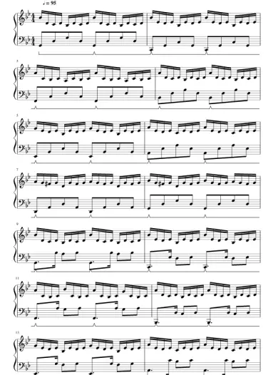

<!DOCTYPE html>
<html lang="en">
  <head>
    <meta charset="UTF-8">
    <meta name="viewport" content="width=device-width, initial-scale=1.0">
    <meta http-equiv="X-UA-Compatible" content="ie=edge">
    <title>detail
    </title>
    <link rel="stylesheet" href="assets/styles.min.css">
    <link link rel="icon" href="favicon.ico">
    <link rel="preconnect" href="https://fonts.googleapis.com">
    <link rel="preconnect" href="https://fonts.gstatic.com" crossorigin="">
    <link href="https://fonts.googleapis.com/css2?family=Open+Sans:wght@300;400;500;600;700;800&amp;display=swap" rel="stylesheet">
  </head>
</html>
<body>
  <div class="wrapper">
    <div class="content">
      <header class="header">
        <div class="container">
          <div class="header__wrap"> 
            <div class="header__col">
              <div class="logo"><a href="#"></a></div>
              <div class="search">
                <div class="search__input-wrap"><i class="icon-search"></i>
                  <div class="search__input">
                    <input type="text" placeholder="Найти...">
                  </div>
                </div>
                <button class="btn btn--mc">Поиск</button>
                <div class="search__dropdown">
                  <ul>
                                        <li class="search__dropdown-result"><a href="#">giacomo+puccini</a></li>
                                        <li class="search__dropdown-result"><a href="#">genshin</a></li>
                                        <li class="search__dropdown-result"><a href="#">gurenge</a></li>
                                        <li class="search__dropdown-result"><a href="#">gravity falls</a></li>
                  </ul>
                </div>
              </div>
            </div>
            <div class="header__col">
              <div class="header__control"> <a class="header__control-item search-btn" href="#"><i class="icon-search"> </i></a><a class="header__control-item" href="#"><i class="icon-cloud"> </i></a><a class="header__control-item" href="#"><i class="icon-user"></i></a></div>
            </div>
          </div>
        </div>
      </header>
      <div class="content-wrap">
        <div class="detail"> 
          <div class="detail__wrap"> 
            <div class="detail__col"> 
              <div class="detail__img"> </div>
            </div>
            <div class="detail__col">
              <div class="detail__name"> G minor bach</div>
              <div class="detail__author">Jasper van Soolingen</div>
              <ul> 
                <li> <i class="icon-clock"></i><span>05:01</span></li>
                <li> <i class="icon-page"></i><span>Количество страниц: 8</span></li>
                <li> <i class="icon-note"></i><span>B♭ major, G minor</span></li>
              </ul>
              <div class="detail__desc">
                <p>
                  Uploaded on Mar 12, 2015 <br>8/23/2015 - Converted to Version 2.0.2 (Mellow Yamaha Grand Piano) <br>
                  3/16/2015 - Finished scoring the fantasia, but am debating on whether to tack it onto the front of this wonderful fugue. The fantasia is not exactly my cup of tea...mostly just a lot of loud banging around to me. Maybe I'll upload it separately and watch the statistics. <br>
                  3/13/2015 – Found an arrangement of the fantasia by Tagliapietra that is somewhat more playable than the Lizst version. It will be inserted at the beginning in the near future. <br>
                  3/12/2015 - Upload of the fugue. The fastasia arrangement by Lizst is just too complex.
                </p>
              </div>
              <div class="detail__control"> <a class="btn btn--mc" href="#"> <i class="icon-download"></i>Загрузить PDF   </a><a class="btn btn--sc" href="#"> <i class="icon-print"></i>Распечатать   </a></div>
            </div>
          </div>
        </div>
        <h2 class="title">Рекомендации</h2>
        <div class="items items--row">
          <div class="items__wrap">
                        <div class="items__item">
                          <div class="items__item-img"></div>
                          <div class="items__item-info"><a class="items__item-name" href="#">Merry-Go-Round of Life: Howl's Moving Castle Piano Tutorial</a>
                            <div class="items__item-add-info"><span> <i class="icon-clock"></i>03:00</span><span> <i class="icon-page"></i> 7 стр (4 части)</span></div>
                          </div><a class="btn btn--mc" href="#">Легкий</a>
                        </div>
                        <div class="items__item">
                          <div class="items__item-img"></div>
                          <div class="items__item-info"><a class="items__item-name" href="#">Merry-Go-Round of Life: Howl's Moving Castle Piano Tutorial</a>
                            <div class="items__item-add-info"><span> <i class="icon-clock"></i>03:00</span><span> <i class="icon-page"></i> 7 стр (4 части)</span></div>
                          </div><a class="btn btn--mc" href="#">Легкий</a>
                        </div>
                        <div class="items__item">
                          <div class="items__item-img"></div>
                          <div class="items__item-info"><a class="items__item-name" href="#">Merry-Go-Round of Life: Howl's Moving Castle Piano Tutorial</a>
                            <div class="items__item-add-info"><span> <i class="icon-clock"></i>03:00</span><span> <i class="icon-page"></i> 7 стр (4 части)</span></div>
                          </div><a class="btn btn--mc" href="#">Легкий</a>
                        </div>
                        <div class="items__item">
                          <div class="items__item-img"></div>
                          <div class="items__item-info"><a class="items__item-name" href="#">Merry-Go-Round of Life: Howl's Moving Castle Piano Tutorial</a>
                            <div class="items__item-add-info"><span> <i class="icon-clock"></i>03:00</span><span> <i class="icon-page"></i> 7 стр (4 части)</span></div>
                          </div><a class="btn btn--mc" href="#">Легкий</a>
                        </div>
                        <div class="items__item">
                          <div class="items__item-img"></div>
                          <div class="items__item-info"><a class="items__item-name" href="#">Merry-Go-Round of Life: Howl's Moving Castle Piano Tutorial</a>
                            <div class="items__item-add-info"><span> <i class="icon-clock"></i>03:00</span><span> <i class="icon-page"></i> 7 стр (4 части)</span></div>
                          </div><a class="btn btn--mc" href="#">Легкий</a>
                        </div>
          </div>
        </div>
      </div>
    </div>
  </div>
  <script src="assets/scripts.min.js"></script>
</body>